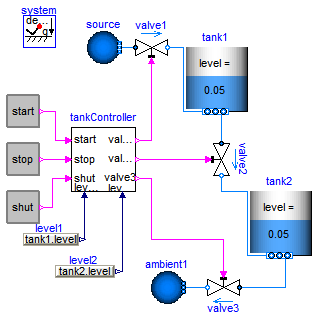

| Name | Description |
|---|---|
| Demonstrating the controller of a tank filling/emptying system | |
 Modelica.Fluid.Examples.ControlledTankSystem.ControlledTanks
Modelica.Fluid.Examples.ControlledTankSystem.ControlledTanks
With this example, the controller of a tank filling/emptying system is demonstrated.
The basic operation is to fill and empty the two tanks:
The above "normal" process can be influenced by three buttons:
The demo-run uses the following button presses:
This example is based on

Extends from Modelica.Icons.Example (Icon for runnable examples).
model ControlledTanks "Demonstrating the controller of a tank filling/emptying system" extends Modelica.Icons.Example; package Medium = Modelica.Media.Water.ConstantPropertyLiquidWater;Modelica.Fluid.Examples.ControlledTankSystem.Utilities.TankController tankController( waitTime=50, maxLevel=0.9*tank1.height, minLevel=0.01); Modelica.Fluid.Examples.ControlledTankSystem.Utilities.RadioButton start( reset={stop.on,shut.on}, buttonTimeTable={20,280}); Modelica.Fluid.Examples.ControlledTankSystem.Utilities.RadioButton stop( reset={start.on,shut.on}, buttonTimeTable={220,650}); Modelica.Fluid.Examples.ControlledTankSystem.Utilities.RadioButton shut( reset={start.on,stop.on}, buttonTimeTable={700}); Modelica.Fluid.Valves.ValveDiscrete valve1( redeclare package Medium = Medium, m_flow_nominal=40, dp_nominal=100000); Modelica.Fluid.Vessels.OpenTank tank1( level_start=0.05, redeclare package Medium = Medium, crossArea=6, height=4, nPorts=2, portsData={Modelica.Fluid.Vessels.BaseClasses.VesselPortsData( diameter=0.2, height=4, zeta_out=0, zeta_in=1),Modelica.Fluid.Vessels.BaseClasses.VesselPortsData( diameter=0.2, height=0, zeta_out=0, zeta_in=1)}); Modelica.Blocks.Sources.RealExpression level1(y=tank1.level); Modelica.Fluid.Valves.ValveDiscrete valve2( redeclare package Medium = Medium, dp_nominal(displayUnit="Pa") = 1, m_flow_nominal=100); Modelica.Fluid.Valves.ValveDiscrete valve3( redeclare package Medium = Medium, dp_nominal(displayUnit="Pa") = 1, m_flow_nominal=10); Modelica.Fluid.Vessels.OpenTank tank2( level_start=0.05, redeclare package Medium = Medium, height=5, crossArea=6, nPorts=2, portsData={Modelica.Fluid.Vessels.BaseClasses.VesselPortsData( diameter=0.2, height=5, zeta_out=0, zeta_in=1),Modelica.Fluid.Vessels.BaseClasses.VesselPortsData( diameter=0.2, height=0, zeta_out=0, zeta_in=1)}); Modelica.Fluid.Sources.Boundary_pT ambient1(redeclare package Medium = Medium,nPorts=1, p=system.p_ambient, T=system.T_ambient); Modelica.Blocks.Sources.RealExpression level2(y=tank2.level); Modelica.Fluid.Sources.Boundary_pT source(redeclare package Medium = Medium, p=2.5e6,nPorts=1, T=system.T_ambient); inner Modelica.Fluid.System system; equationconnect(shut.on, tankController.shut); connect(stop.on, tankController.stop); connect(start.on, tankController.start); connect(tankController.valve1, valve1.open); connect(level1.y, tankController.level1); connect(tankController.valve2, valve2.open); connect(tankController.valve3, valve3.open); connect(level2.y, tankController.level2); connect(source.ports[1], valve1.port_a); connect(valve3.port_b, ambient1.ports[1]); connect(tank2.ports[2], valve3.port_a); connect(valve2.port_b, tank2.ports[1]); connect(valve1.port_b, tank1.ports[1]); connect(tank1.ports[2], valve2.port_a); end ControlledTanks;